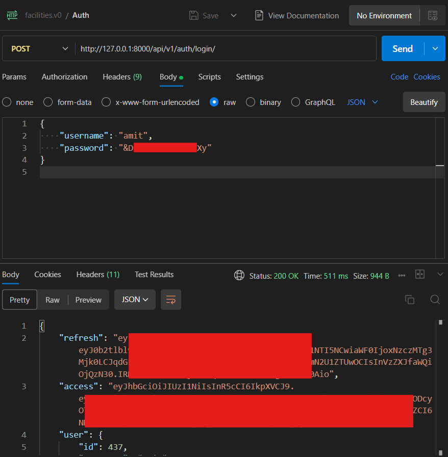

Installer¶
Choose how you want to run the backend:
- Native (Linux) — uses the backend installer on Ubuntu or WSL2. It sets up Python, PostgreSQL, RabbitMQ, the runtime
.env, migrations, seed data, optional Earth Engine credentials, admin-boundary data, and the built-in initialization check. - Docker — runs the application and GeoServer in containers. Best when you want a pre-built runtime without installing dependencies on the host.
Optional integrations (GEE, GCS, GeoServer) are Steps 4–6 above. Installer flags and troubleshooting are documented below.
Installation¶
Both paths use the same backend installer (installation/install.sh in core-stack-backend) for configuration, credentials, and the API test user. Steps 1–8 below match between native and Docker; only Step 3 (how the runtime is provisioned) and Step 8 (where you run processes) differ.
| Step | What you do |
|---|---|
| 1 | Prerequisites |
| 2 | Clone the backend repository |
| 3 | Provision the runtime — native full install or Docker containers |
| 4 | GEE service account JSON key (optional) |
| 5 | GCS bucket (optional) |
| 6 | GeoServer (optional) |
| 7 | Data paths in nrm_app/.env |
| 8 | Start the runtime |
| 9 | Log in and invoke APIs (shared below) |
Step 1 — Prerequisites¶
- Ubuntu or another Linux environment. On Windows, use WSL2.
sudoaccess, internet access, Git.- Enough disk space for dependencies and the admin-boundary dataset.
Step 2 — Clone the backend repository¶
Step 3 — Provision the runtime¶
Run the full backend installer from the repo root:
This creates the conda env, PostgreSQL, RabbitMQ, nrm_app/.env, migrations, seed data, the installer test user (superuser step), and optional integrations if you pass flags (for example --gee-json).
Review nrm_app/.env after the run. Do not create a competing repo-root .env.
Step 4 — GEE service account JSON key¶
Skip if you already passed --gee-json during Step 3.
- Create and download a Google Cloud service account JSON key with Earth Engine access.
- Import it into the backend:
bash installation/install.sh \
--only gee_configuration \
--gee-json /full/path/to/service-account.json
Step 5 — GCS bucket¶
Skip if you do not need GEE-backed raster publication yet.
Create a bucket in us-central1 and grant IAM to the same service account as Step 4. See Google Cloud Storage — bucket setup and Required IAM.
bash installation/install.sh \
--only gcs_bucket_configuration \
--input gcs_bucket_name=your-gcs-bucket
Step 6 — GeoServer¶
Skip if GeoServer was configured during Step 3. Otherwise register your instance:
bash installation/install.sh \
--only initialisation_check \
--input geoserver_url=https://host/geoserver \
--input geoserver_username=admin \
--input geoserver_password=your-password
For Docker + container GeoServer, use http://geoserver:8080/geoserver from inside the app container, or see the Docker tab Step 6.
Step 7 — Data paths in nrm_app/.env¶
The installer sets paths in nrm_app/.env. Confirm they match your layout:
DATA_DIR— source and working data used by pipelines (inputs to generate other layers).EXCEL_DIR/EXCEL_PATH— exported spreadsheet outputs.
On native Linux these usually sit under the backend tree (for example $BACKEND_DIR/data/...). Only edit nrm_app/.env if the installer defaults are wrong for your machine.
Step 8 — Start the runtime¶
From core-stack-backend, use two terminals.
Terminal 1 — Django:
Terminal 2 — Celery (required for computing APIs):
Access (native):
| Service | URL |
|---|---|
| API / docs | http://127.0.0.1:8000/ |
| Django admin | http://127.0.0.1:8000/admin/ |
Django admin can use the same installer test user as the API, or run python manage.py createsuperuser for a separate admin account.
Follow steps in order. Steps 4–7 use the same installation/install.sh commands as native, run inside the CoRE Stack container.
Step 1 — Prerequisites¶
- Docker Engine, Git, internet access.
- Enough disk space for images and data.
Step 2 — Clone the backend repository¶
Use the clone directory as the host path in Step 3 (example: ~/dev/docker if you clone there).
Step 3 — Provision the runtime¶
Pull image and create network:
Start CoRE Stack — mount the codebase only (install.sh, nrm_app/.env, service account JSON). Pipeline data (inputs and exports) lives under /root/core-stack-data inside the image, not in this mount.
docker run -dit \
--name core-stack \
--network corestack-network \
-p 9000:80 \
-p 9001:8000 \
-v ~/dev/docker:/core-stack-backend \
kapildadheechgv/core-stack-dev:latest
Replace ~/dev/docker with your clone path from Step 2.
Start GeoServer:
docker run -dit \
--name geoserver \
--network corestack-network \
-p 8080:8080 \
docker.osgeo.org/geoserver:2.28.0
Prepare the backend inside the container:
docker exec -it core-stack bash
sudo service postgresql start
sudo service rabbitmq-server start
cd /core-stack-backend
export User=root
bash installation/install.sh --only django_migrations,env_file,superuser
Step 4 — GEE service account JSON key¶
- Create and download a Google Cloud service account JSON key.
- Copy it into the mounted backend directory (host or container path):
- Inside the container:
bash installation/install.sh \
--only gee_configuration \
--gee-json /core-stack-backend/service-account.json
Use your real filename in place of service-account.json.
Step 5 — GCS bucket¶
Same command as native. Inside the container:
bash installation/install.sh \
--only gcs_bucket_configuration \
--input gcs_bucket_name=your-gcs-bucket
See Google Cloud Storage — bucket setup and Required IAM.
Step 6 — GeoServer¶
Inside the container:
Step 7 — Data paths in nrm_app/.env¶
Paths are already set under /root/core-stack-data in the image. Step 3 (env_file) should write these into nrm_app/.env. Only if they are missing or wrong, set:
DATA_DIR=/root/core-stack-data
EXCEL_DIR=/root/core-stack-data/excel_files
EXCEL_PATH=/root/core-stack-data/excel_files
DATA_DIR— source and working data for pipelines.EXCEL_DIR/EXCEL_PATH— exported spreadsheet outputs.
No need to create directories manually.
Step 8 — Start the runtime¶
Inside the container (or separate docker exec sessions):
Terminal 1 — Django:
docker exec -it core-stack bash
conda activate corestackenv
cd /core-stack-backend
python manage.py runserver 0.0.0.0:8000
Terminal 2 — Celery:
docker exec -it core-stack bash
conda activate corestackenv
cd /core-stack-backend
celery -A nrm_app worker -l info -Q nrm
Access (Docker on host):
| Service | URL |
|---|---|
| Web | http://127.0.0.1:9000/ |
| API / docs | http://127.0.0.1:9001/ |
| Django admin | http://127.0.0.1:9001/admin/ |
| GeoServer admin | http://127.0.0.1:8080/geoserver |
Step 9 — Log in and invoke APIs¶
Same flow for native and Docker. Computing APIs use JWT bearer tokens, not the Django admin session.
Base URL
| Install | base_url for API calls |
|---|---|
| Native | http://127.0.0.1:8000 |
| Docker | http://127.0.0.1:9001 |
1. Installer test user
Created by the superuser installer step (full native install, or Docker Step 3). To recreate:
Note the log line Installer test superuser ... username=test_user_XXXX and password test_change_me.
2. Log in (JWT)
curl -s -X POST http://127.0.0.1:8000/api/v1/auth/login/ \
-H "Content-Type: application/json" \
-d '{"username":"test_user_4272","password":"test_change_me"}'
On Docker, replace the host with http://127.0.0.1:9001. The response includes access (use on API calls), refresh, and user.
3. Get gee_account_id
Most computing POST bodies need a gee_account_id. List configured Earth Engine accounts (requires a valid JWT from step 2):
On Docker, use http://127.0.0.1:9001 as the host. Use the numeric id from the response. If the list is empty, complete Step 4 in the Native or Docker tab above, or see Google Earth Engine.
4. Call a computing API
Keep Django and Celery running (Step 8). Example:
curl -X POST http://127.0.0.1:8000/api/v1/lulc_for_tehsil/ \
-H "Authorization: Bearer <access-token>" \
-H "Content-Type: application/json" \
-d '{
"state": "karnataka",
"district": "raichur",
"block": "devadurga",
"start_year": 2022,
"end_year": 2023,
"gee_account_id": 1
}'
More routes: Computing API Endpoints and First manual run. Auth errors: API Errors.
5. Postman
Import from this docs repository:
| Asset | File |
|---|---|
| Collection | core-stack-api.postman_collection.json |
| Environment (native) | core-stack-local.postman_environment.json |
| Environment (Docker) | core-stack-docker.postman_environment.json |
Run requests in order:
| Order | Request | Purpose |
|---|---|---|
| 1 | Auth — Login | POST /api/v1/auth/login/ → saves JWT access |
| 2 | GEE — List accounts | GET /api/v1/geeaccounts/ → read gee_account_id |
| 3 | Computing — LULC for tehsil | Sample POST; needs Celery on queue nrm |

Useful installer controls¶
# Show exact step names
bash installation/install.sh --list-steps
# Rebuild only nrm_app/.env
bash installation/install.sh --only env_file
# Rerun only backend validation
bash installation/install.sh --only initialisation_check
# Add Earth Engine credentials later
bash installation/install.sh \
--only gee_configuration,initialisation_check \
--gee-json /full/path/to/service-account.json
# Add GeoServer values later and validate
bash installation/install.sh \
--only initialisation_check \
--input geoserver_url=https://host/geoserver \
--input geoserver_username=admin \
--input geoserver_password=your-password
# Rerun the public API smoke test
bash installation/install.sh \
--only public_api_check \
--input public_api_key=your-public-api-key
Use --only for the smallest safe rerun. Use --from STEP when you deliberately want to rerun a step and everything after it.
Optional inputs¶
The installer currently accepts:
gee_jsonpublic_api_keypublic_api_base_urlgeoserver_urlgeoserver_usernamegeoserver_password
--gee-json PATH is a shortcut for --input gee_json=PATH.
After install¶
- Read the Backend Code Map.
- Complete Step 9 — Log in and invoke APIs if you have not already.
- For integration deep-dives: Integrations (GEE, GCS, GeoServer).
- Use Troubleshooting when the installer or runtime names a failing step.